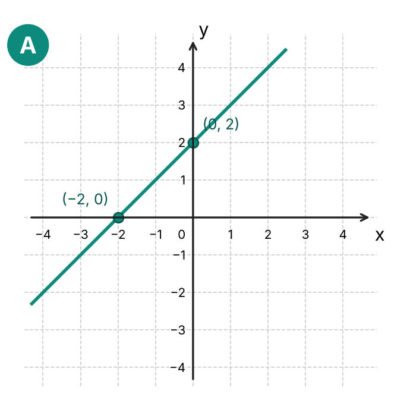
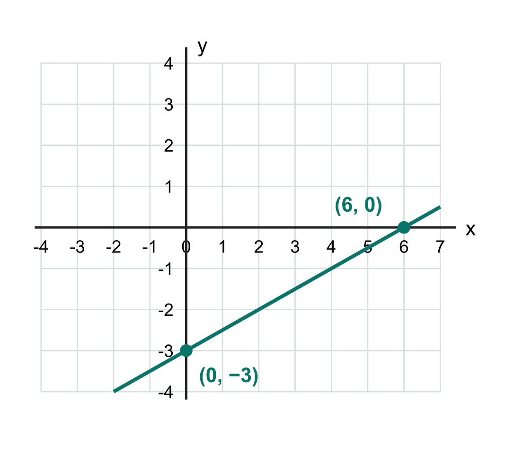
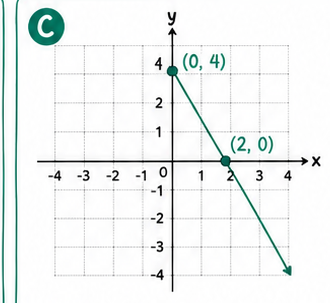
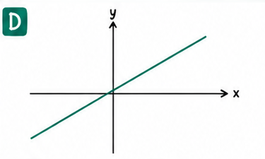
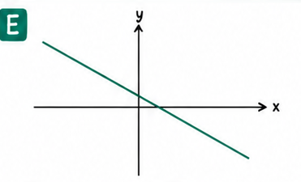
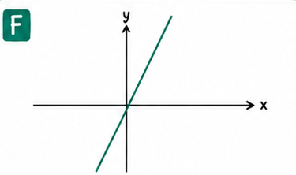
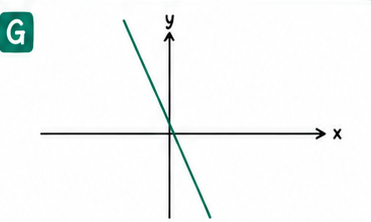
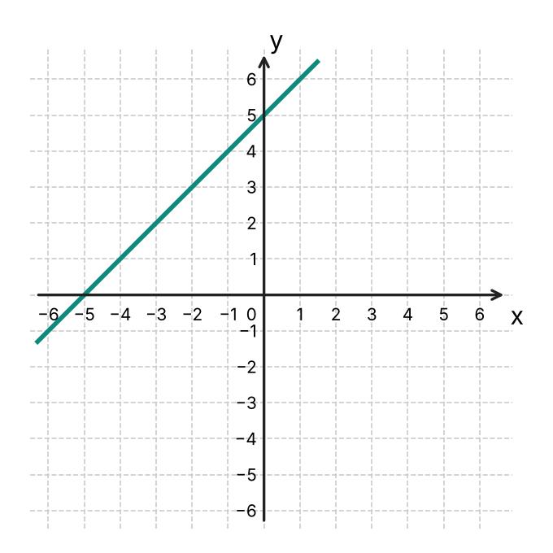

Parte 1 · Graficar a mano
En tu cuadernola, arma una tabla de al menos 3 puntos para cada función y traza su gráfico. Para cada una, indica si es creciente o decreciente, su ordenada en el origen y su raíz.
a) f(x) = 2x − 1 | b) f(x) = −x + 3 | c) f(x) = 3x |
Creciente o decreciente: ______ | Creciente o decreciente: ______ | Creciente o decreciente: ______ |
Parte 2 · Emparejar fórmula con gráfico
Cada gráfico corresponde a una de estas fórmulas. Escribe debajo de cada letra la fórmula que le corresponde.
1 f(x) = x + 2 | 2 f(x) = −2x + 4 | 3 f(x) = 0,5x − 3 |
A | B | C |
 Fórmula: ______________ |  Fórmula: ______________ |  Fórmula: ______________ |
Parte 3 · Creciente o decreciente
Observa cada gráfico y marca si la función es creciente o decreciente, sin calcular nada.
D | E |
 □ Creciente □ Decreciente |  □ Creciente □ Decreciente |
F | G |
 □ Creciente □ Decreciente |  □ Creciente □ Decreciente |
Parte 4 · Ordenada y raíz, mixto
Para cada caso, indica la ordenada en el origen y la raíz. Algunos vienen dados por gráfico, otros por expresión.
1 f(x) = 4x − 8 | 2 f(x) = −3x − 6 | 3 Gráfico |
(dado por expresión) Ordenada en el origen: ______ | (dado por expresión) Ordenada en el origen: ______ |  Ordenada en el origen: ______ |